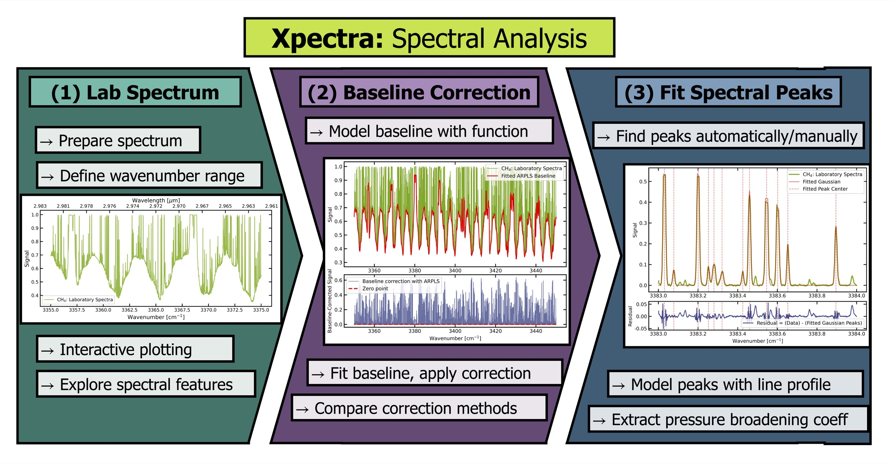
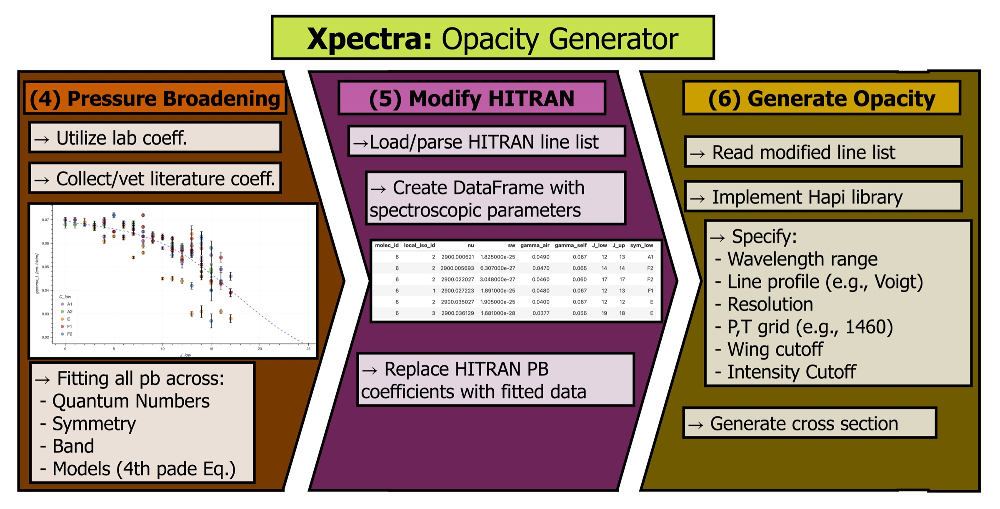

Open source Python package for analyzing laboratory spectra and identifying spectral lines, built to support exoplanet radiative-transfer models
Exoplanet and brown dwarf atmosphere models depend on opacity data: how strongly each molecule absorbs light at a given wavelength, temperature, and pressure. That data starts in the lab, but turning a raw laboratory spectrum into a usable, HITRAN-linked line list used to be a slow, manual process. Xpectra automates the core of that pipeline: baseline correction, peak fitting, and line identification, using methane as the primary test case.
The package is organized into a few modules that cover the core workflow, built for the NASA Ames Space Science and Astrobiology Division I interned with:


At NASA, open source is treated as part of the scientific method rather than an afterthought. Publicly available code and data make results reproducible, invite scrutiny from outside the immediate team, and ensure the analysis outlives the tenure of any single contributor. I presented on this at NASA Ames's ST Open Science Workshop in September 2024, with Xpectra as the case study.
Developing Xpectra for that audience meant treating it as software rather than a one-off analysis script: version control on GitHub, type-hinted functions, detailed docstrings, structured logging in place of print statements, and Sphinx documentation generated directly from the docstrings.
Xpectra isn't currently under active development, since Dr. Gharib-Nezhad has since left NASA. The code and docs above are still available if you'd like to see how it works.